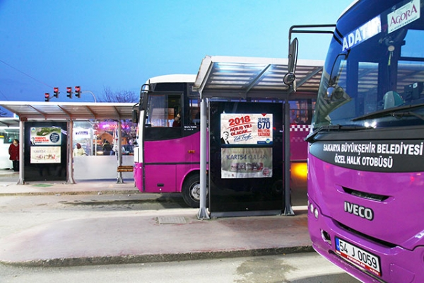

| Home | Local Dishes | Historical Places | Useful Links | About me | Contact me | Registration |
Transportation system in Sakarya is actually very easy to understand. There are only two options that you can use. Buses and special buses.
There are 7 railway stations throughout a 65 km railway inside the city limits. The railway which connects Istanbul to Ankara and other Anatolian cities passes through Sakarya. The distance of Sakarya to Istanbul by railway is 141 km and 436 km to Ankara.
If you prefer to travel to Adapazarı by air, the nearest airport is the Sabiha Gökçen Airport in Kurtköy – Istanbul and Istanbul Atatürk Airport in Yeşilköy.
